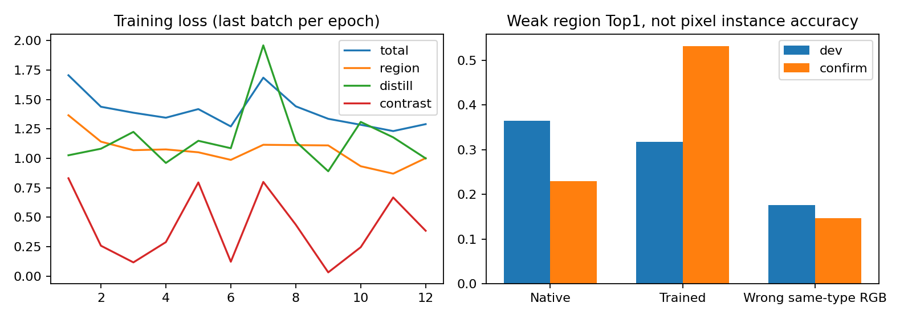
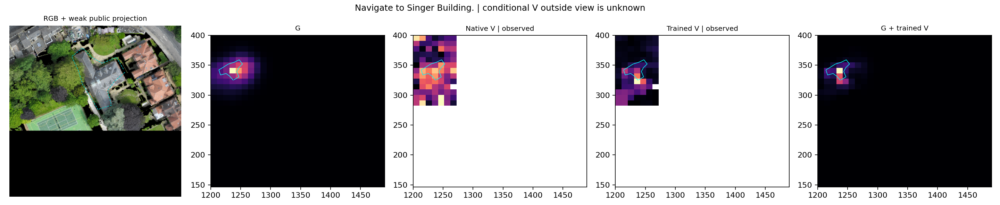
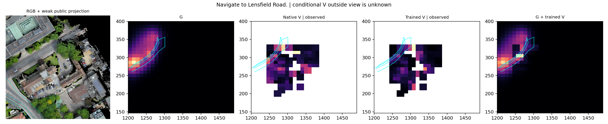
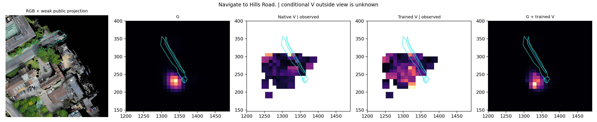
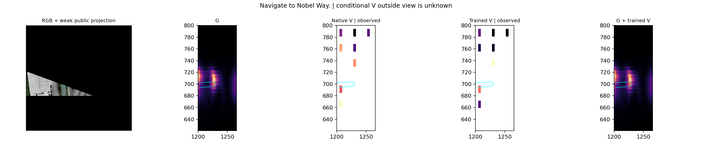
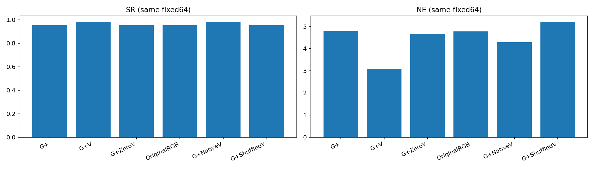
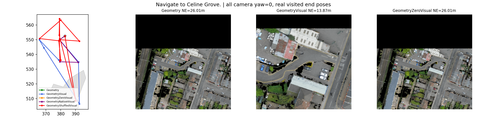
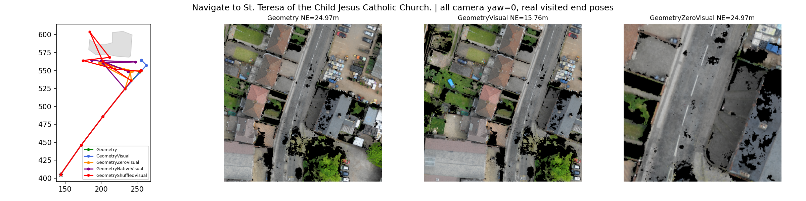

Geometry-Guided Visual Belief：第一阶段
全部区域标签为公开Polygon弱监督。V为观测域条件分布，不与全局G直接混同。
中文报告 | 统计

Singer Building

Lensfield Road

Hills Road

Nobel Way

真实闭环与RGB置零对照

Celine Grove

St. Teresa of the Child Jesus Catholic Church
